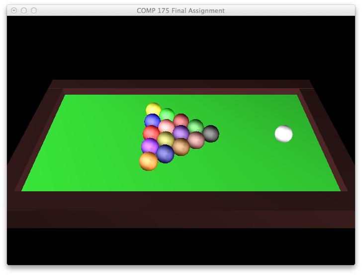
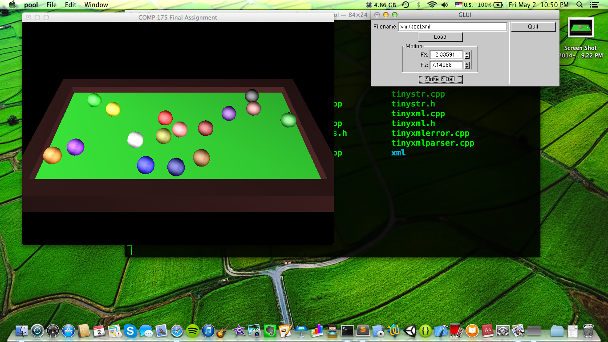

|
Description
|
|
For my final project I made a pool table simulator.
When you set the applied force vector components and
click "strike cue ball", the balls bounce off of one
another and the edges when they collide in the same
way that they would in real life. Collisions are
partially elastic, meaning the balls lose some
kinetic energy upon impact with each other or with
table edges, as well as from friction with the table
surface.
|
|
Technical Contributions
|
|
Building on certain analogous priciples of ray tracing, I
created a model in showing the way solid objects bounce off of each other similar to the way light bounces off a reflective surface. The xml and scene parsers, shape interface files, and Algebra.h were written by my professor and used for multiple projects during the course. The bulk of my work is done in main.cpp, pool.*, physics.h, and ball.*. I also implemented the shape concrete classes with a partner as part of an
earlier project in the course. The executable file "pool" was compiled on a 64-bit
mac, so it will need to be recompiled to run if you are using a different system (see the Makefile). Keep in mind that this project uses OpenGL as a dependency, so be sure that it is installed before compiling. The Makefile may need to be altered slightly depending on the location of the OpenGL header file on your system.
|
|
Screenshots
|
|

Figure 1 - The pool table in its initial state.
|

Figure 2 - The ball configuration after breaking up the Pascal triangle with the cue ball.
|
|